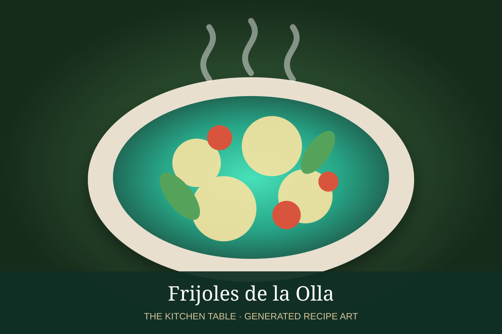

← Back to all recipes
BEANS · MEXICAN
Frijoles de la Olla
Simple pot beans slowly simmered with onion, garlic, and salt until tender and brothy.
2 hrServes 8

Photo: Pinterest
Ingredients
- 1 lb dried pinto, black, or peruano beans
- 1/2 white onion
- 3 garlic cloves
- 8 cups water, plus more as needed
- 1 1/2 tsp kosher salt
- Epazote, optional
Preparation
- Rinse and sort beans.
- Combine beans, onion, garlic, and water in a heavy pot.
- Simmer gently until beans are tender, adding water as needed.
- Add salt during the final 30 minutes.
- Serve in their broth, with epazote if desired.